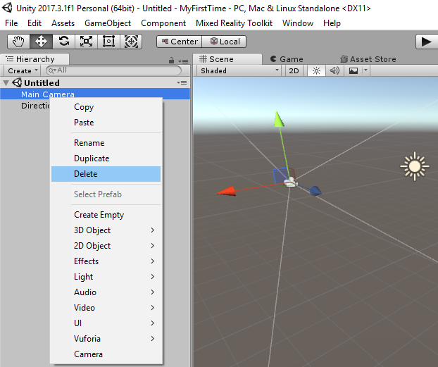
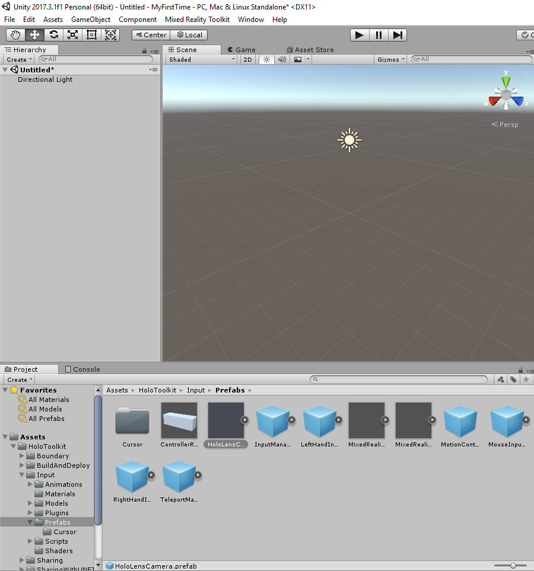
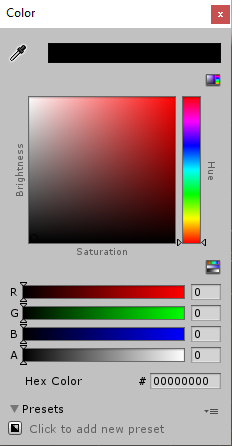
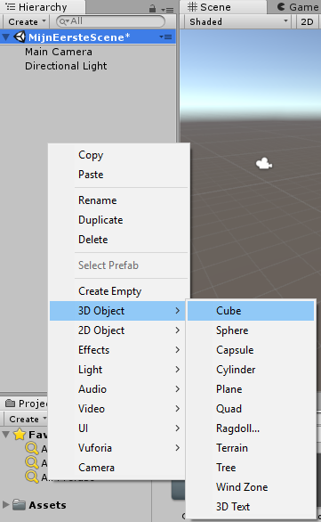
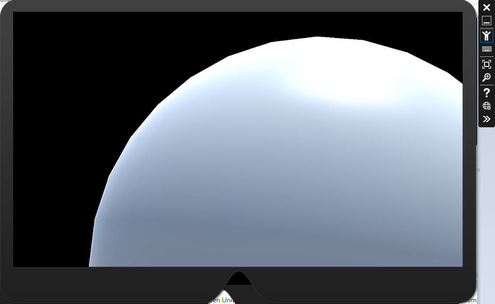

Les 2 - Jouw eerste HoloLens project
Welkom bij de tweede les. Aan het eind van deze les
- Weet je hoe een project in Unity voor de HoloLens kunt configureren.
- Heb je een basiskennis van waar en wat in Unity
- heb je je eerste 3D-modellen toegevoegd in Unity
- Weet je hoe je jouw applicatie kunt deployen naar zowel de emulator als de HoloLens.
- Kun je jouw eigen applicatie bekijken.
Inhoudsopgave
1: Jouw eerste project
Je hebt de vorige les twee programma's geinstalleerd om je applicatie te ontwikkelen. Dat zijn Unity en Microsoft's Visual Studio. Unity wordt gebruikt om de scenes (denk aan een scene op een toneel) vorm te geven. Visual Studio gebruiken we als IDE om de C# code aan te passen.
We beginnen dit hoofdstuk in Unity.
1.1: Project aanmaken
Hieronder staat eenn stapsgewijze instructie om jowu eerste HoloLens-project aan te maken. Eerst behandelen we het aanmaken van een project, het importeren van de benodigde Assets en als laatste het toevoegen van 3D-modellen.
-
Als eerste gaan we een nieuw project maken. Dat doen we door op
'new' te drukken.
- Geef het project een naam en kies de locatie waar je het project wilt opslaan. Zorg
dat de overige setings zoals hieronder zijn.
-
Als het goed is, bestaat je Unity-omgeving uit drie onderdelen. Links je 'Hierarchy',
in het midden 'Game', 'Animator' en 'Animation', en rechts 'Inspector' en 'Services'.
- Hierarchy laat de visuele elementen van je scene zien.
- Game laat zien hoe de game gerenderd wordt.
- Het scene paneel laat de elementen zien die je in de 3D wereld hebt geplaatst. Deze kun je onder andere hier aanpassen.
- De services laten Unity gerelateerde services zien. Dit paneel is gloednieuw. Misschien krijgt deze bruikbare features in de toekomst.
- Inspector geeft de mogelijkheid om de geselecteerde elementen aan te passen.
- Om voor je HoloLens te ontwikkelen heeft Microsoft een toolkit ontwikkelt die het ontwikkelen voor de o.a. de HoloLens makkelijker maakt. Deze kun je hier downloaden.
- Het zojuist gedownloade package gaan we nu in Unity importen. Druk op Assets ->
Import package -> Custom package. Selecteer het zojuist gedownloaden bestand.
-
Na het uitpakken vraagt Unity welke package je wilt importeren. Je moet hier alle
packages importen.
-
Als alles is uitgepakt en geinstalleerd, ziet je Unity er zoals onderstaande uit. Bij
assets is het mapje HoloToolKit verschenen.
-
Unity is in de basis een programma om games te maken, die gespeeld worden op een
beeldscherm. De camera staat dan al zo ingesteld. Dit moeten we aanpassen. We
verwijderen 'Main Camera'.
- 
-
Wanneer dat gedaan is, gaan we de HoloLens camera toevoegen. Dit wordt de Point of
View van jouw applicatie. We gaan hiervoor gebruik maken van de HoloToolkit. Ga naar
'Assets/HoloToolkit/Input/Prefabs' folder en sleep HoloLensCamera naar de plek waar de
Main Camera stond. Directional Light mag blijven staan.
- 
-
We gaan nu de scene opslaan. Wat scenes zijn, gaan we
jullie later uitleggen. Druk op ctrl + (shift +) s of ga
naar File ->Save scene (As). Maak een mapje aan in
Assets aan en noem deze
Scenes. Geef je scene een naam (bijvoorbeeld MijnEersteScene).
-
Voordat we 3D-modellen gaan toevoegen, moeten we nog een laatste stap doen. We
drukken in de menubalk bovenaan op Mixed Reality Toolkit ->
Configure -> Apply Mixed Reality Project Settings. Achter de schermen is de
applicatie nu in orde gemaakt voor de Microsoft Store.
1.2: 3D Modellen toevoegen
Je hebt nu je project zo gemaakt dat je ermee kan werken voor de HoloLens. Veel van deze stappen zijn projectwide. Deze hoef je dus niet bij elke scene te doen. Hieronder gaan we 3D-modellen toevoegen aan de applicatie.
-
Mixed Reality projecteert in je echte omgeving, we willen dan ook dat er geen
achtergrond is (in dit geval). We gaan naar inspector en
geven de property Clear Flags onder
camera de waarde Solid Color.
Daarnaast drukken we op Background en geven deze de waarde
#00000000. Je leest het goed zijn er er 8. De eerste zes
zijn voor de kleur en de laatste twee voor de doorschijnendheid.
- 
-
We gaan nu vier verschillende 3D-modellen rondom de camera toevoegen. Druk met je
rechtermuisknop binnenin je
hierarchy. 3D Object -> Cube.
Nu is de Inspector verandert naar die van de cube. Met transform kun je de cube
aanpassen. Position past de positie aan,
Rotation de rotatie en Scale
de grootte.
- 
-
We hebben zojuist de cube toegevoegd. De cube wordt echter direct op de camera geladen.
Voor deze oefening willen we dat niet. We gaan de cube dan ook verplaatsen. Dit kan
door het aanpassen van de XYZ op position onder transform. Als je naar het plaatje
hieronder kijkt, zie je dat De blauwe pijl oveernkomt met de Z-waarde, rood is X en
groen is y. We willen dat de cube 2 meter voor de camera komt te staan. We veranderen
dan ze z-waarde van 0 naar 2. We gaan ervanuit dat de camera
0,0,0 als positie heeft.
-
Doe bovenstaande stap ook voor een Sphere, Capsule & Cylinder.
Het resultaat zou er zoals onderstaand uit moeten zien.
2: Deployen van je Applicatie
Dit hoofdstuk beschrijft het bekijken van je HoloLens applicatie in zowel de emulator als op de HoloLens. De eerste stappen zijn in beide gevallen hiervoor hetzelfde. Deze worden besproken in hoofdstuk 2.1. Daarna die je de aanwijzingen van hoofdstuk 2.2 of hoofdstuk 2.3 op te volgen.
2.1: Gereedmaken voor deployment
-
We drukken op File -> Build Settings of
Ctrl + Shift + B. Als eerste drukken we daar op
Add Open Scenes. Selecteer bij
Platform Universal Windows Platform en zorg dat de
rest overeen komt met de afbeelding hieronder. Development Build
en Unity C# Projects zorgen ervoor dat de C# code wordt
gemaakt en dat de applicatie later makkelijker debugged kan worden.
-
Druk op Build. Je kunt dan de locatie kiezen om dit project
op te slaan. Maak in de root-directory van je Unity Project een folder genaamd
App aan en slecteer deze.
Tip: Als je de naam MyFirstTime als projectnaam hebt aangehouden zoals uitgelegd in hoofdstuk 1, dan is dat de root map van je project. -
Nadat Unity klaar is met het builden en het genereren van de daarbij horende code, wordt
de root-folder in File Explorer geopend. De inhoud zou er
ongeveer uit moeten zien als onderstaande. Links staat de root-folder. Rechts de
{root}/App folder. Je mag nu dubbelklikken op het SLN-bestand in de App folder. Deze
heet {projectnaam}.sln. Als het goed is, wordt het project nu geopend in Visual Studio.
- Je dient nu naar het hoofdstuk Emulator of HoloLens te gaan om de appplicatie te deployen.

2.2: Deployen naar Emulator
Je hebt een HoloLens Applicatie opgezet in Unity en deze vervolgens gebuild als een Unity C# project. Je hebt de applicatie kunnen openen met Visual Studio en wilt hem nu gaan deployen naar de Emulator.
-
We moeten nu de Solution configuration aanpassen naar:
Release. De Solution Platform
naar x86 en de Device naar
HoloLens Emulator {versienummer}. Zie de drie rode pijlen
het plaatje hieronder.
-
Druk nu op het groene 'play' pijltje. De emulator zal opstarten.
Let op: De emulator wordt eerst opgestart. Daarna wordt jouw applicatie pas gedeployed naar de emulator. Het kan dus zijn dat je hem niet direct ziet in het menu.
Let op: De 3D-objecten zijn erg dichtbij de HoloLens camera geplaatst. Na het openen zul je dan ook direct op een grijs model uitkijken. Kijk hieromheen.-

- 
2.3: Deployen naar Hololens
Je hebt een HoloLens Applicatie opgezet in Unity en deze vervolgens gebuild als een Unity C# project. Je hebt de applicatie kunnen openen met Visual Studio en wilt hem nu gaan deployen naar de HoloLens.
-
We moeten nu de Solution configuration aanpassen naar:
Release. De Solution Platform
naar x86 en de Device naar
Remote Machine.
-
-
Vervolgens krijg je onderstaand scherm. Met een beetje geluk vindt Visual Studio direct
de HoloLens, mocht dat niet zo zijn, dan gaan we handmatig het ip-adres invoeren in de
volgende stap.
-
Om het ip-adres te krijgen van de HoloLens gaan we naar Menu ->
Settings -> Network & Internet -> Advanced Options
-
Deze voeren we in, in het scherm bij stap 2. De eerste keer gaat de HoloLens om een code
vragen, deze haal je op door te gaan naar
Menu -> Update & Security -> For Developers -> Pair. De code die je hier krijgt,
dient ingevoerd te worden in Visual Studio.
- Druk op de groene play knop in Visual Studio en de applicatie gaat verzonden worden naar de HoloLens. Wacht tot deze gelezen is en open deze vervolgens via het menu. De 3D- modellen zijn nogal groot, dus neem na het laden van de applicatie wat afstand om ze goed te kunnen zien.

Slot
We hebben deze les gekeken naar het opzetten, deployen en runnen van je HoloLens project. Volgende les gaan we ervoor zorgen dat je project online wordt opgeslagen met behulp van versiebeheer. Microsoft heeft hier zijn eigen systeem voor en deze gaan we ook gebruiken. Na volgende les kan het dan ook geen excuus meer zijn dat je werk weg is, want het zou altijd in je remote repository opgeslagen moeten zijn.